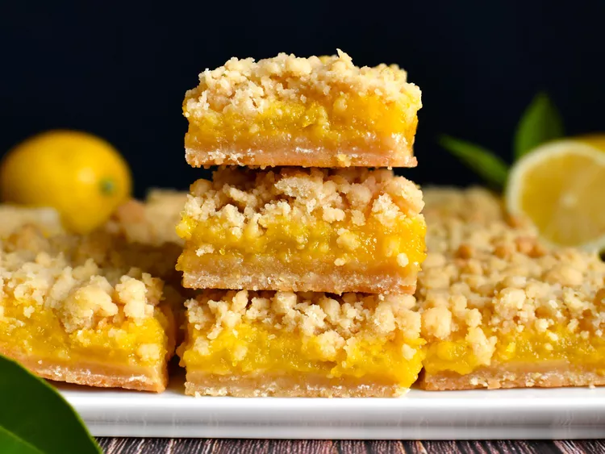

Lemon Crumb Bars

Photo by Kim
Description
"These lemon crumb bars have a buttery shortbread crust, with a tart, tangy lemon filling, and a golden crumb topping" - AllRecipes
Preparation time is 15min plus 45 cooking, 40min between cooling and freezing. Serves 16 lemon bars
Ingredients
Crust and Crumb Topping
- 3/4 cup unsalted butter, melted
- 1/2 cup white sugar
- 1/2 cup firmly packed light brown sugar
- 3/4 teaspoon salt
- 2 teaspoons vanilla extract
- 2 cups all-purpose flour
- 1/4 teaspoon baking powder
Filling
- 3 large eggs, at room temperature, divided
- 1 cup plus 2 tablespoons white sugar
- 2 tablespoons cornstarch
- 2 tablespoons freshly grated lemon zest
- 1 pinch salt
- 3 tablespoons unsalted butter, melted and cooled
- 1/2 cup freshly squeezed lemon juice
Steps
- Preheat the oven to 350 degrees F (180 degrees C). Line a 9x9-inch square pan with enough parchment paper to have overhang on all sides.
- For crust and crumb, stir together melted butter, white sugar, brown sugar, salt, and vanilla until thoroughly combined. Add in flour and baking powder and mix until mixture comes together in large clumps. Measure out a loosely-packed 1 3/4 cups crumbs and press firmly and evenly into the bottom of prepared pan. Reserve remaining crumb mixture for topping.
- Break an egg into a large bowl and whisk for a few seconds. Lightly brush a thin layer of egg over the crust; you will use any egg left in the filling. Place crust into the freezer for about 10 to 15 minutes while you prepare filling.
- For filling, to the egg you used as egg wash, add the remaining 2 eggs, 1 cup plus 2 tablespoons sugar, cornstarch, lemon zest, and pinch salt. Whisk until completely smooth and combined. Whisk in the 3 tablespoons melted butter until incorporated. Pour in lemon juice and whisk until combined.
- Remove crust from freezer and pour the filling evenly over the top.
- Bake bars in the preheated oven for 25 minutes.
- Remove pan from oven and sprinkle reserved crumb topping evenly over the top, breaking up any larger crumbs as needed. Return pan to the oven.
- Bake until crumbs just begin to turn golden, 20 to 25 minutes more. Allow bars to cool completely, about 30 minutes, before cutting and serving.
Source: All Recipes (dot) com
Main Page